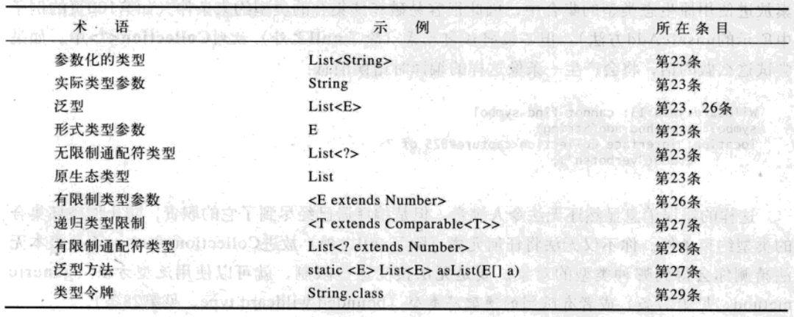

【15】使可变性最小化
不可变类只是实例不能被修改的类。每个实例中包含的所有信息都必须在创建该实例的时候就提供，并在对象的整个生命周期内固定不变。为了使类成为不可变，要遵循下面五条规则：
<1>不要提供任何会修改对象状态的方法。
<2>保证类不会被扩展。
<3>使所有的域都是 final 的。
<4>使所有的域都成为私有的。
<5>确保对于任何可变组件的互斥访问。
不可变对象本质上是线程安全的，它们不要求同步。当多个线程并发访问这样的对象时它们不会遭到破坏。这无疑是获得线程安全最容易的办法。
不可变类真正唯一的缺点是，对于每一个不同的值都需要一个单独的对象，创建这种对象的代价可能会很高。这时候就需要为不可变类提供一个共有的可变配套类来进行复杂的多阶段操作，例如：
StringBuilder 类就是 String 类的可变配套类，用来改变 String 对象，以提升性能。
【16】复合优先于继承
继承的功能非常强大，但也存在诸多问题，因为它违背了封装原则。只有当子类和超类之间确实存在子类型关系时，使用继承才是恰当的。即便如此，如果子类和超类处在不同的包中，并且超类并不是为了继承而设计的，那么继承将会导致脆弱性。为了避免这种脆弱性，可以用复合和转发机制来代替继承，尤其是当存在适当的接口可以实现包装类的时候。包装类不仅比子类更加健壮，而且功能也更加强大。
复合设计：不用扩展现有的类，而是在新的类中增加一个私有域，它引用现有类的一个实例，现有类成为了新类的一个组件，新类中的每个实例方法都可以调用被包含的现有实例中的对应方法，并返回结果。例如：
1 | //转发类（中间层），包含转发方法 |
【17】要么为继承而设计，并提供文档说明，要么就禁止继承
为了允许继承，类还需遵守其他一些约束。构造器决不能调用可被覆盖的方法，无论是直接调用还是间接调用，因为超类的构造器是在子类的构造器之前运行的，所以子类中覆盖版本的方法将会在子类的构造器运行之前就先被调用。
对于那些并非为了安全地进行子类化而设计和编写文档的类，要禁止子类化。有两种方法可以禁止子类化：
<1>把这个类声明为 final 的。
<2>把类中所有的构造器都变成私有的，包括包级私有的，并增加一些公有的静态工厂来替代构造器。
你可以机械地消除类中可覆盖方法的自用特性，而不改变它的行为。将每个可覆盖方法的代码体移到一个私有的 “辅助方法（helper method）” 中，并让每个可覆盖方法调用它的私有辅助方法。然后，用 “直接调用可覆盖方法的私有辅助方法” 来代替 “可覆盖方法的每个自用调用” 。
【18】接口优于抽象类
接口和抽象类机制之间的区别：抽象类允许包含某些方法的实现，但是接口则不允许；一个更重要的区别在于，为了实现由抽象类定义的类型，类必须成为抽象类的一个子类，而任何一个类，只要它定义了所有必要的方法，并且遵守通用约定，它就被允许实现一个接口，而不管这个类是处于类层次的哪个位置。
抽象类的演变比接口的演变要容易得多。如果在后续的发行版本中，你希望在抽象类中增加新的方法，始终可以增加具体方法，它包含合理的默认实现。然后，该抽象类的所有实现都将提供这个新的方法，对于接口，这样做是行不通的。
通过对导出的每一个重要接口都提供一个抽象的骨架实现（skeletal implementation）类，可以把接口和抽象类的优点结合起来。接口的作用仍然是定义类型，但是骨架实现类接管了所有与接口实现相关的工作。例如：
接口1：
1 | public interface IFoo { |
接口2：
1 | public interface IBar { |
接口1的抽象骨架实现：
1 | public abstract class AbstractFoo implements IFoo{ |
新的测试类：
1 | public class FooBar extends AbstractFoo implements IBar{ |
FooBar 类继承自 AbstractFoo 类，可以调用父类的 set()、get()、foo() 方法，也可以自己实现接口1和 IBar 接口的方法，其中接口1 foo() 方法在抽骨架价类 AbstractFoo 中实现，不需要再次实现，并且其它继承自 AbstractFoo 类的任意子类都不需要实现接口1的 foo() 方法， AbstractFoo 类接管了所有与接口1实现的相关工作。
【19】接口只用于定义类型
接口应该只被用来定义类型，它们不应该被用来导出常量。如果常量被看做枚举类型的成员，就应该用枚举类型（enum type）来导出这些常量，否则，应该使用不可实例化的工具类（utility-class）来导出常量，如：
1 | public class PhysicalConstants { |
【20】类层次优于标签类
标签类很少有使用的时候，当你想要编写一个包含显式标签域的类时，应该考虑一下，这个标签域是否可以被取消，这个类是否可以被层次类来代替。当你遇到一个包含标签域的现有类时，就要考虑将它重构到一个层次结构中去。例如，标签类如下：
1 | class Figure { |
转换为层次类如下：
1 | abstract class Figure { |
【21】用函数对象表示策略
有些语言支持函数指针（function pointer）、代理（delegate）、lambda表达式，或者支持类似机制，允许程序把 “调用特殊函数的能力 “ 存储起来并传递这种能力。这种机制通常用于允许函数的调用者通过传入第二个函数，来指定自己的行为。
函数指针的主要用途就是实现策略（Strategy）模式。为了在 JAVA 中实现这种模式，要声明一个接口来表示该策略，并且为每个具体策略声明一个实现了该接口的类。当一个具体策略被使用一次时，通常使用匿名类来声明和实现这个具体策略类。当一个具体策略是设计用来重复使用的时候，它的类通常就要被实现为私有的静态成员类，并通过公有的静态 final 域被导出，其类型为该策略接口。
策略接口示例：
1 | public interface Comparator<T> { |
匿名类示例：
1 | Array.sort(stringArray，new Comparator<String>() { |
导出静态域实现策略示例：
1 | class Host { |
【22】优先考虑静态成员类
嵌套类有四种：静态成员类、非静态成员类、匿名类和局部类。
静态成员类是最简单的一种嵌套类，它可以访问外围类的所有成员，包括那些声明为私有的成员。
非静态成员类每个实例都隐含着与外围类的一个外围实例相关联，在非静态成员类的实例方法内部，可以调用外围实例上的方法，或者利用修饰过的 this 构造获得外围实例的引用。如果嵌套类的实例可以在它外围类的实例之外独立存在，这个嵌套类就必须是静态成员类：在没有外围实例的情况下，想要创建非静态成员类的实例是不可能的。
如果声明成员类不要求访问外围实例，就要始终把 static 修饰符放在它的声明中，使它成为静态成员类，而不是非静态成员类。
匿名类出现在表达式中必须保持简短（10行或更少），否则会影响程序可读性。匿名类的一种常见用法是动态地创建函数对象（sort(A ，new B(){ … })；）；另一种常见用法是创建过程对象，如 Runnable、Thread 或者 ThreadTask 实例。
六、泛型：
【23】请不要在新代码中使用原生态类型
使用原生态类型会在运行时导致异常，因此不要在新代码中使用。原生态类型只是为了与引入泛型之前的遗留代码进行兼容和互用而提供的。Set

不要新代码中使用原生态类型，这条规则有两种例外：
a.在类文字中必须使用原生类型，如 List.class、String[].class 合法，但是 List
b.由于泛型信息可以在运行时被擦除，因此在参数化类型而非无限制通配符上使用 instanceof 操作符是非法的。用无限制通配符类型代替原生态类型，对 instanceof 操作符的行为不会产生任何影响
下面是利用泛型来使用 instanceof 操作符的首选方法：
1 | if （o instanceof Set） { |
【24】消除非受检警告
用泛型编程时，会遇到许多编译器警告，每一条警告都表示可能在运行时抛出 ClassCast-
Exception 异常。要尽最大的努力消除这些警告。如果无法消除非受检警告，同时可以证明引起警告的代码是类型安全的，就可能在尽可能小的范围中，用@SupperessWarnings(unchecked)注解来禁止该警告。要用注释把禁止该警告的原因记录下来。
【25】列表优先于数组
数组和泛型有着非常不同的类型规则。数组是协变且可以具体化的；泛型是不可变且可以被擦除的。因此，数组提供了运行时的类型安全，但是没有编译时的类型安全，反之，对于泛型也一样。一般来说，数组和泛型不能很好的混用。如果你发现自己将它们混合起来使用，并且得到了编译时错误或者警告，你的第一反应就应该是用列表 (List
1 | static <E> E reduce(List<E> list，Function<E> f，E initval) { |
【26】优先考虑泛型
使用泛型比使用需要在客户端代码中进行转换的类型来得更加安全，也更加容易。在设计新类型的时候，要确保他们不需要这种转换就可以使用。这通常意味着要把类做成泛型。只要时间允许，就要把现有的类型都泛型化。这对于这些类型的新用户来说会变得更加轻松，又不会破坏现有的客户端。